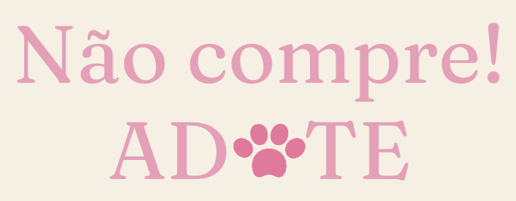
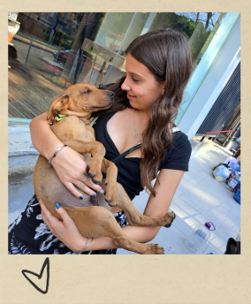
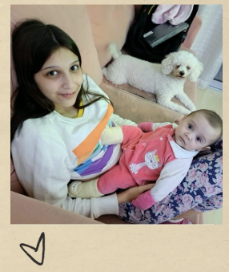
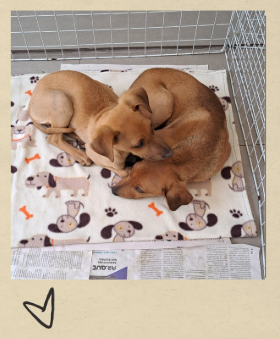
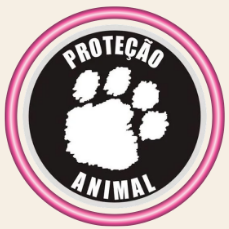
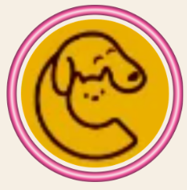
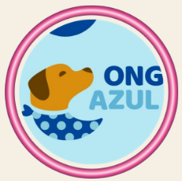

Sobre o projeto
O Amor entre Patas nasceu do carinho pelos animais e do desejo de conectar aqueles que precisam de um lar a pessoas dispostas a oferecer amor e cuidado.
Incentivar a adoção responsável e aproximar animais que precisam de um lar de pessoas dispostas a acolhê-los.
Quero aproximar animais que procuram um lar de pessoas que desejam um companheiro, transformando vidas por meio do amor e da adoção responsável.
Adoção responsável
Paciência para conhecer e respeitar
o tempo de cada animal.
Um animal pode viver 15 anos ou mais. É
uma escolha de longo prazo.
Avaliar rotina, espaço e custos antes de
decidir.
Este projeto quer aproximar as pessoas de organizações reais de proteção animal, para que conheçam seu trabalho e descubram como apoiar: adotando, doando, sendo voluntárias ou divulgando.
ONGs

promove eventos de adoção de cães e gatos, conectando animais à espera de um lar a famílias interessadas em adotar.

Resgata, trata e reabilita cães e gatos em situação de abandono, buscando novas famílias por meio da adoção responsável.

Apoia protetores independentes com alimentação, cuidados veterinários e medicamentos, além de promover a adoção de cães e gatos resgatados.
O próximo capítulo pode começar com você
Gostou de conhecer o Amor Entre Patas? Faça parte dessa
história e dê o primeiro passo para novos encontros.
Vamos conversar?
Seja sobre adoção responsável ou sobre o projeto, sua pergunta é bem-vinda.